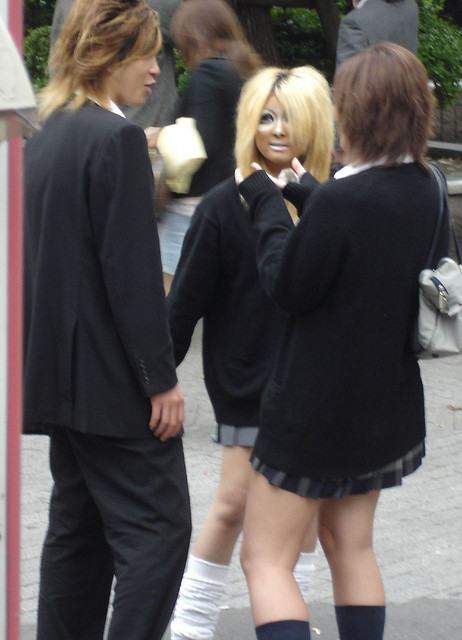
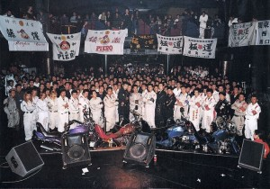
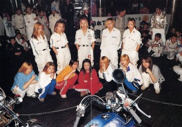
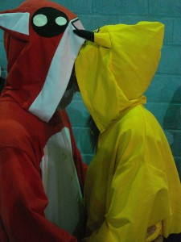
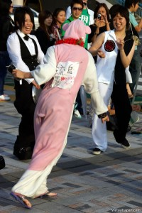
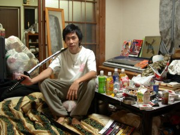
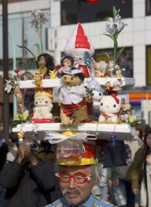
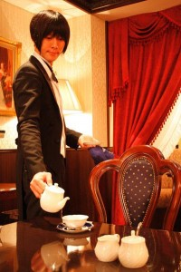

Delilerin Rönesansı: Japonya
Memoirs of a geek-sha: And I’m still alive! —-varan 2—-
Hiç hız kaybetmeden konuya geçen yazıda kaldığımız yerden devam ediyoruz. Nerde kalmıştık? Hmm evet biz burda bu şekilde takılırken Japon yaşıtlarımız nerelerde, ne şekillerde takılıyor?
Gyaru gal’lar: Kogal – GanGuro – Yamanba
|
 İyice zıvanadan çıkmış Kogal |
Kogallara “seksi liseli kızlar” diyebiliriz. Ama kogallar sadece bir moda akımını değil bir yaşam tarzını da simgeleştirdiği için geleneksel takılan Japonya’nın en nefret ettiği gruplardan biridir. Kogal kızlarının okul etekleri haddinden kısadır ve dizüstü çorapları aşağıya kaymasın diye onları bacaklarına yapıştıranlar vardır. Bu kızlar marka kıyafetleri, Burberry atkıları ve solaryumu severler. Zengin ailelerinden gelen parayla savurgan bir yaşam sürmekle suçlanan kogallar medyada sığ ve materyalist gençlik olarak etiketlenmiştir. Kogallar babaerkil Japonya’nın geleneksel kadın normlarına isyan ederek “preppy style” benzeri bir moda anlayışının öncüleri olarak sokaklarda kırıtırlar.. Hatta fahişelikle ve eskort kız olmakla suçlanmışlardır. Lise çağındaki bazı kogallar harçlığını babası yaşında adamlara eskortluk ederek kazanır. Telefon kulübelerinde bu kızların korsan reklamlarını bulabilirsiniz. Gossip Girl dizisindeki çıtırlara benzeyen bu kızlar Japonluklarından vazgeçmeyip en uçlara giderek ganguroyu yarattılar.
Ganguro – Yamanba
“Siyah surat” veya “Pandalar” olarakta bilinen bu kızlar benim görünce en tırstığım gruplardan biri. Harajuku’dan çok Shibuya’da takılmayı seviyorlar. İnanılmaz koyu renkte solaryum ve çok koyu kahverengi fondötenli ağır makyajın en önemli özelliği beyaz göz ve dudak makyajı. Neresi mi önemli? Valla bilemiyorum. Onlar uzun uzun anlattı ama ben akan beynimi klavyeden toplayıp kulağımdan geri sokmaya çalıştığım için anlayamadım. Söylendiğine göre halk bu kızları çok
ezmiş, aşşağılamış suratlarını siyaha boyamaları ise tamamen “politically incorrect” ve aşağılayıcı bulunmuş. Japonya’nın en ofansif gruplarından biri. (Nazi cosplayerlardan sonra tabii.) Hepsinin sanki suratında tüp patlamış gibi… Webcam üzerinden ilk karşılaşmamızda Ring filmindeki kızın negatifiyle konuştuğumu sandım resmen. Bu fırtına şimdilerde duruluyor ve solaryum salonları yavaş yavaş kapanıyor ama gangurolar yerlerinde duramadıkları için kalkıp yamanba’yı çıkardılar ve çıtayı artık nereye bilemiyorum ama çok garip bir yerlere yükselttiler. Yamanbalar solaryum yerine sadece yüzlerine koyu fondöten tercih ettikleri için diğer iki gruptan ayrılır. Yamanba ismi eski Japon efsanelerinde sıkça tasvir edilen çirkin ve korkunç bir dağ cadısından gelmektedir.
Bu kızların toplamına “gyaru” denir. İngilizcedeki “Gal” kelimesinin mutasyona uğramış hali. Gyarular baskıcı toplumun son nadide meyvelerindendir. “Bu kızlar suratlarını siyaha boyuyor. Zencilere çok ayıp oluyor.” Ne yapsın kızlar? Hip-hop seviyorlar ve o müziği yapanlara benzemek istiyorlar, bu kadar basit. Kostüm oyunlarına nasıl hasta bir millet oldukları gangurolardan belli. Bling Bling ve bol pantolon ablaları kesmiyor. Duyarlı hümanist fikirler Harajuku gençliğinin kapısında atomlarına ayrılmakta. Ben kızları çözene kadar neredeyse webcamimi yiyecektim. Boşuna vakit kaybetmeyin diye söylüyorum. Bu koyu renkli mutantların erkeklerine “center guy” (Sentāgai) deniyor. Bu oğlanların asıl başka bir olayı var ki… Onu bir sonraki yazıya saklıyorum. Hentai ve japon pornosu yazısına anlarsınız yaa…
Sukeban
Tam o sırada Japonya'da...
Sukeban gençliği de yukarıdakiler gibi ortak bir moda anlayışından çok bir yaşam şeklini sembolize ediyor. Sukebanlar lise çağında okul kızlarından oluşan sokak çeteleri. Anime senaryosu sallamıyorum gerçeklerden bahsediyorum. Devlet okullarının geleneksel denizci kıyafetine benzeyen okul formaları ve permalı rengarenk saç modelleriyle sukebanlar, Japonya’nın en yanıltıcı gruplarından biri. Sonuçta lise formalı ve tiz sesli ufak tefek bir kaç japon kızcağız ne kadar korkunç olabilir ki? 1980’li yıllarda Tokyo polisi tarafından dağıtılan uyarı broşürlerini okuyunca olayın boyutu daha net anlaşılabilir. Bu gençler her türlü kural ve yasadan nefret ederek büyümekte. Hal ve tavırlar böyle erkek gibi bir garip… Dolayısıyla cici kızlar klasik huzurlu YinYang Tokyo’sunu 50 yıldır birbirine katıyorlar. 60’lardan beri varolan sukeban kelime olarak “bayan çete lideri” demek. Bunların erkek karşılığı “bancholar”. Bir gün yakuzaya girmeyi ümit eden delikanlılar. Sadece kızlardan oluşan sukeban çeteleri bıçak ve jilet taşıyorlar. Farklı gruplar arasında çıkan kavgalar son derece kanlı olabiliyor. Gruba karşı işlenen küçük bir hatadan bir kaç sigara yanığıyla kurtulurken büyük gafların sonu toplu linçlere kadar gidiyor. Kısaca bu kızlarımız da Japonya’daki pek çok diğer şey gibi… Görünüşte inanılmaz sevimli daha sonra kafa karıştırıcı ve nihayetinde belki de ölümcül. Fotoğrafa bakıp öyle ufak oğlanları dövdüklerini sanmayın. Ben komik diye koydum o resmi. Yedikleri çoğu herzenin görsel kanıtlarına nette ulaşmak neredeyse imkansız.replica mid size rolex watches
“Kanto Delinquent Women” olarak bilinen bu çetelerin en büyüğünün 20.000 üyesi olduğunu belirtmeme izin verin. Şimdi arkanıza yaslanın ve Kill Bill’in finalindeki okul formalı topuzlu kız gibi 20.000 sevimli Japon çıtırın ne kadar tehlikeli olabileceğini şöyle bir hayal edin. Haklarında daha fazla şey merak ediyorsanız Sukeban Deka filmini seyredebilirsiniz. (Yeni olanı değil eski orijinal Sukeban Deka’ya ulaşmanızı tavsiye ederim. Kendisi Battle Royale filmine ilham vermiştir. ) Bu hatunları yakından tanıyınca Battle Royale filmine daha farklı bakmaya başladım. Hakikaten adamlar bunlarla bir türlü baş edemiyor.. Yakında Battle Royale gerçek olabilir.montblanc replica watch
Bosozoku – Speed tribes
|  |  |
“Sessiz, sakin ağırbaşlı Japonya’dan motosiklet çetesi çıkar mı?” demeyin. Bosozokular yukarıdaki sukebanların hardcore motosikletli versiyonları… Çoğu okul çağında çetelere katılıyor. Bosozokuların yıllara direnen oldukça ilginç bir tarzı var. Üzerlerine giydikleri tulumlar 2. dünya savaşındaki kamikaze pilotlarının giydikleri tulumların orijinal kopyaları. Yüzlerini hava kirliği maskeleriyle veya bandanalarla örtüyorlar. Niçün? Çünkü yedikleri haltlar yüzler ve kimlikler açıkkken yapılacak şeyler değil. Kız ve erkekler genelde ayrı gruplarda takılıyorlar. Tulumlarına el yapımı nakışlar ve logolar işlemeye bayılıyorlar. Aynı zamanda bilet gişelerinde ve polis ikazlarında asla durmuyorlar. Trafikte kalabalık gruplar halinde tehlikeli oyunlara kalkışan bosozokuların en psikopatları da büyüyüp abi olunca yakuzalara katılabiliyor. Ceplerinde patlamaya hazır özel yapım molotof kokteylleri taşımayı seven bosozoku kızları provokasyona hiç gelemiyor. En ufak harekette üzerinizden geçiveriyor.
Bosozoku kızlarını tanımak isterseniz yukarıdaki Kamikaze Girls filmini tavsiye ederim. Karakterlerden biri Lolita diğeri Bosozoku. Anime havasında süper eğlenceli bir film. “Bosozokuların nesli tükendi.” diyenlere aldanmayın küçük gruplar halinde Tokyo’da bile varlıklarını sürdürüyorlar ama eski ihtişamlarını kaybettiler. Okuduğunuz neredeyse her mangada en az bir bosozoku karakter vardır. İçki içer, küfür eder, millete sataşır, adamın alnının ortasına demir çubuk sokar ama aslında son derece yumuşak kalplidir! Nasıl bir ikilem ben de çözemedim. Siz de uğraşmayın. “Biz süper iyiyiz.” dediler ben hemen kabullendim.cartier santos ronde replica fake tag watches ladies
Kigurimi
|
 Kigurimi sevgililer |
 Tek bir Kigurimi herkesi azdırmaya yeter. |
Hastasıyım kigurimilerin! Burdan aççık ve seççik itiraf ediyorum. Kigurimi modası gayet basit. Herhangi bir pofuduk hayvan kostümünü üzerinize geçirmeniz yeterli. Bu grup rahatlarına oldukça düşkün. Öyle lolitalar gibi korselere, topuklu çizmelere dayanamıyorlar. Üzerlerine o çuval gibi peluşları geçirip sokağa fırlıyorlar. Kostümlerinin bol ve rahat olması gerektiğinde hızlı hareket edebilmelerini sağlıyor. Çünkü kigurimiler her ne kadar sevimli pandalar gibi gözükseler de Harajuku’nun en muzur kitlesi. Hatta onlara kısaca şiddet yerine şok faktörünü kullanan teröristler diyebiliriz. Köprüdeki tüm grupların organizasyonunu bunlar yapıyor. Eğer youtube’da Japonya’nın şaka şovlarıyla ilgili bir şeyler yakaladıysanız şaka olayını ne kadar abarttıklarını görebilirsiniz. Onlara göre şaka mağduru kişinin sonradan psikolojik tedaviye ihtiyacı olmuyorsa o şaka başarılı olmamış demektir.
İşte kigurimiler bu ekolün takipçileri olarak hayatı lolitalara, kogallara falan zehir ederek eğleniyor. Sayılarının azalmasına rağmen hala daha Tokyo’nun en tırsılan gruplarından biri olan bosozokulara bile baş kaldırıp orta parmak gösterebilen tek grup bu pikaçular ve nedense yedikleri onca herzeye rağmen her seferinde yırtıyorlar. Aslında bana oranın gençliğini tamamen yanlış değerlendirdiğimi ve olayın çılgın moda akımlarından çok sosyolojik bir fenomen olduğunu gösterenler onlar oldu. Bu yazı için kogallardan, lolitalara pek çok gruptan hatun ve abiyle konuşmama rağmen gerçekten arkadaş olduğum ve beraber gülüp eğlendiğim tek grup kigurimiler. Aslında bu yazıdizisi için en çok onlara teşekkür etmem lazım. “Sanal ortamda arkadaşlık mı olurmuş canım.” şeklindeki salakça önyargımı onlar yıktı sonuçta.
Bunlardan en önemlisi: Hikaru. Beni elimden tutup sadece japonca konuşulan ve “gaijinlerin” alınmadığı forumlara sokan ve bu karışık kültürün labirentlerinde kaybolmaktan kurtaran kardeş budur. O olmasa işin içine bir türlü giremeyip derinden kaynayan bu sosyolojik fenomenden bihaber öylesine bir kılık-kıyafet yazısı yazmış olacaktım. Hikaru bizimkinin takma adı. Harajuku Köprüsü’nde herkes takma isim kullanıyor. Chat odalarındaki isminiz gerçek isminiz oluyor. İlk tanışmamızda kendisi bir net cafedeydi. Daha sonra ne zaman ve saat kaçta konuşsak çocuk hep net cafede. Bir gün dayanamayıp sordum “Sen hiç evine gitmiyor musun?” şeklinde. Cevap kısa sürede geldi: Hayır efendim gitmiyormuş. 16 yaşında evi terketmiş. “E peki naapıyorsun?” diye sorunca büyük harfle tek bir cevap geldi: “YAŞIYORUM!”
Son birkaç aydır konuştuğum istisnasız her Tokyoludan “klasik japon yaşam tarzı” konulu uzun monologlar dinlemeye alıştığımdan bu cevap beni bir nanosaniyeliğine dumura uğrattı. Bilmeyenlere kısaca anlatayım. Japonya’da her şey kurallara göre çalışır. Hayata başladığınız saniyeden itibaren tüm geleceğiniz planlanmış durumda ve kimse buna karşı çıkamıyor. Toplumun ve ailenizin sizden beklediği şey: okulu bitir- üniversiteye git- bir şirkette çalış- evlen- çoluk çocuğa karış- emekli ol- öl. Dünyanın her yerinde aileler çocuklarından az çok aynı şeyleri bekliyor ama burada olay farklı çünkü son yıllara kadar herkes kaderini kabullenmiş durumdaydı. Hayallerinizde müzik yapmak, sanatla uğraşmak olabilir belki hobi olarak bunlara devam edebilirdiniz ama ne olursa olsun sonunda sizi bekleyen genelde sıkıcı bir ofiste karıncalar gibi ömrünüzün sonuna kadar çalışmak ve babanızın dedenizin yolundan gitmek. Bu yüzden harajuku gençliğine kolej zamanı biraz sapıtan gençlik diyebiliriz. Gerçek anlamda özgür olabildikleri tek zaman dilimi bu 4 sene. Ondan sonra tekrardan toplumun ve ailelerinin onlardan beklediği dar kıstasa sığmak zorundalar. Çılgın kıyafetlerini çıkartıp takım elbiseleri giyerek ciddi ve her anı planlanmış bir kafeste yaşamak… “Salarymen” denilen bu grup japon gençliğin korkulu rüyası. Salarymenlerin çoğu ağır alkoliktir. Aslında Japonya’nın tamamının alkolle başı belada.
Belgesellerde falan görmüşsünüzdür: Sürü gibi binlerce takım elbiseli döpiyesli ve boş bakan insanın iş çıkışında robotlar gibi metroya doluşup gittiği o malum Japonya. Japonya’da intihar oranının oldukça yüksek olduğu bilinen bir gerçek. Üstelik bu sekizyüz yıldır böyle. Ya toplumun senden istediği gibi yaşayacaksın, ya da kılıcı karnına sokup… Toplumun bu düzenini protesto etmek isteyen samuraylar da aynı şekilde kılıcı karnına sokuverdiği için olay bir türlü gelişemiyor. Yemek yapmakta kullandıkları o küçük mangal kömürlerini yakarak intihar etmek Japon gençliğinin bir dönemki favori aktiviteleri arasında.
İşte Hikaru ve daha binlerce genç bu düzene isyan ederek kendi yollarını çizmek ve hayallerinin peşinden gitmek istediklerinde inanılmaz zorluklarla mücadele etmek zorunda kalıyorlar. Aileleri onlardan her türlü desteği anında çekiyor, toplumdan dışlanıyorlar. “Freeter” diye bağırıyormuş herkes bunlara. Yaşayacak bir ev tutamıyor, kendilerini idame ettirecek herhangi bir iş bulmakta zorlanıyorlar. Peki Hikaru, arkadaşları ve daha binlercesi nerede yaşıyor?
Net cafe refugees (netto kafue nanmin): Siber dünyanın mülteci teröristleri
Yaklaşık 3 hafta her dakika sohbet ettikten sonra bendeniz nihayet Hikaru’nun yaşam tarzında bir gariplik olduğunu anladım. “Bir insan internet cafe’de ne kadar süre takılabilir ulu Manitu?” diye düşünüyordum ama açıkça sormaya tırsıyordum. Öyle kafamdan “Acaba anarşist avrupa punkları gibi işgal evlerinde falan mı yaşıyorlar?” diye kendimce yazıyordum. Sonra bir gün webcam’den bana Miyavi’nin meşhur Aho Matsuri dansını öğretirken net kafenin ortasında kalkıp “Bekle sıram geldi. Duş alıp geleceğim.” dedi. Ben “Nasıl? Nerede? Nasıl bir kafe burası? Duş mu var?” diye dumur olunca “Wirelesscam’i arkadaşıma veriyorum kafenin içini ve benim bölmemi sana gezdirsin.” dedi. Çocuğun teki webcami ordan oraya sürükleyip benle ısrarla japonca konuşurken bunların yaşam alanlarına göz atma şansım oldu. Öncelikle cubicle motifli bölmeler neredeyse tamamen kapalı. TOTAL PRIVACY! Tamamen size özel bu bölmede aklınıza gelen her şeyi yapabilirsiniz. Yemek yiyebilirsiniz. Arkada duşlar var, isminize kayıtlı anahtarlı bir dolapta tüm kıyafetlerinizi ve özel eşyalarınızı saklayabilirsiniz. Temiz iç çamaşırı bile satıyor internet cafe! Yani inanılması güç ama gerçek: Bu insanlar internet cafe’de yaşıyor! Sadece Tokyo’da 5000’den fazla “cyber-homeless” var.
Otel parası, ev kirası gibi şeyler ödemiyor ve çok az bir parayla yaşamlarını idame ettiriyorlar. Tüm bu çekilen çile kendilerinden beklenen o hayatı yaşamamak için. İnternet cafe mültecileri sosyal normların hiç birini kabul etmeden Tokyo’nun göbeğinde göçebe ve tamamen çingenelere benzeyen bir yaşam tarzı sürüyorlar. Diledikleri gibi sanatla müzikle uğraşıyor ve her gün yeni şeyler yaratıyorlar. Aielelere göre onlar birer parazit ve Japonya’nın yüz karası fakat aslında mülteciler orada bir rönesans yaratmanın eşiğindeler.
Hikaru’nun ailesinin hiçbir üyesi onunla görüşmüyor. Annesi ve kızkardeşi sokakta onu gördüklerinde kafalarını çeviriyorlarmış. Babası zaten en baştan “İstesen de geri dönemezsin.” demiş. 16 yaşından beri internet cafelerde kendi gibi binlerce mülteciyle yaşıyor. Ekonomik refah seviyesinin oldukça yüksek olduğu böyle bir ülkede gerçekten Hikaru’nun söylediği gibi yaşlı nüfus genç nüfusa kıyıyor. Sonuçta ben de pek çok diğer “gaijin” gibi yanılmıştım. Harajuku gençliği sadece bir tüketim ve moda olayının çok ötesinde. Onlar Japonya’nın kökleşmiş geleneklerini bu kadar sarsabilen ilk nesil.
Hikikomori
|
 Hikimori'nin eline samuray kılıcı verilir mi?!? |
Bunların varlığını da yine aynı arkadaştan öğrendim çünkü kendisi bir ex-hikikomori. Hikikomoriler benzer şekilde yine okul-iş-evlilik dayatmasından bezen bir kitle. Buyrun Wikipedia’nın hikikomori tanımına: “Japon kökenli bir sözcük olan Hikikomori 21. yüzyılda artık bir çeşit hastalık kabul edilmektedir. Japonca’da sözcük anlamı ‘Elini ayağını çekmek’ olan bu sözcük yaşamdan elini ayağını çekip zamanlarının çoğunu (temel ihtiyaçlar dışındaki tüm zamanını) bilgisayar başında geçirenleri ifade etmektedir. Japon psikiyatr Tamaki Saitō ‘nun dünya tıp literatürüne kazandırdığı “hikikomori hastalığı”nın tek müsebbibi bilgisayar değil. 90′lı yıllardan beri Japonya’da kendini ailesiyle yaşadığı evin bir bölümüne kapatıp sosyal yaşamı tamamen reddeden ergen ve gençleri tanımlamak için kullanılıyor.”
Bazı aileler “Bir gün odasından çıkacak.” diye bunları besleyip bakıyor ama tedavi edilmediğinde hikikomorilerin çoğu hayatına son veriyor. Aslında Amerika ve Avrupada’da pek çok hikikomori var. (Shut-ins) Ama hikikomoriler tamamen sosyal hayatı reddettikleri için daha hardcore bir grup. Ölümcül bir hastalık olması da durumun ciddiyetini gösteriyor.
Hikaru Harajuku Köprüsü ve kigurimiler sayesinde kendi yaratığı bu hapisaneden çıkmayı başaran şanslı azınlıktan biri. Söylediğine göre köprü ve o garip kitle ona yeni bir yaşam şansı vermiş. “Yoksa çoktan odamda kendimi asmıştım“ dedi bana aleni bir şekilde. Var ya resmen yordu bu Japon serisi beni. Habire çenem klavyeye düşüyor. Kendi elimle nasıl bir bela açtım başıma diye düşünmüyor değilim.
Akihabara Çocukları: Otakular
|  |
Bu beylerle konuşabilmek için utanarak itiraf ediyorum ama erkek taklidi yapmak zorunda kaldım. Çünkü sanal ortamda bile hatun görünce bunların sesi soluğu kesiliyor. U S and A gençliğinin “geek” ya da “nerd” karakterleri otakutunun tam karşılığı sayılmaz. Klasik sosyal durumlarda tutuk ama teknolojik konularda bilgili anime hastası bu gençlere “geek” denemez, hele inek hiç denemez çünkü çoğu okulla alakasını erkenden kesiyor. Onlara obsesif gençlik diyebiliriz. Extreme bir otakuyu karşıdan gelirken derhal farkedersiniz. Stilsizliğe dayalı muhteşem bir stilleri ve hep çok rahat ayakkabıları vardır. Çünkü günün yarısını Akihabara’da ucuz elektronik eşya, anime figürü ve manga kovalayarak geçirirler. Günün geri kalanındaysa habire kendilerini kovalayıp tartaklayarak ellerindeki paraları çalan bancholardan kaçmakla meşgullerdir. Rahat ayakkabılar bir otaku’nun en önemli silahıdır. Otakular 2007’den beri her yıl mekanları Akihabara’da protesto yürüyüşü düzenliyorlar. Japon halkı genelde sokaklara çok zor dökülür o yüzden bu protestolar medyada oldukça dikkat çekti. Otakulara gösterilen şiddeti kınayan bu gösteriler her yıl büyümekte.
|
 Swallowtails Cafe'nin meşhur butler'larından:Ryutaro |
Akihabara Tokyo’daki her türlü elektronik malzemenin ve manga dükkanlarının Mekke’si. Burada sadece otakulara hizmet veren maid cafeler var. Fransız hizmetçileri gibi giyinmiş bu kızlar utangaç otakulara “Master” diye hitap edip, içeceklerini koyuyor, beraber bilgisayar oyunları oynayıp, omletlerine ketçaptan kalp çiziyorlar. Hepsi bu. Seksüel hiçbir şey yok. Üstelik çoğu o kadar tiz bir çocuk sesiyle konuşuyor ki… Sanki 9 yaşında gibi kızlar. Garip bir durum. Japon kızları otakulara çok kötü davranıyor devamlı tersliyorlar, o yüzden bu maid cafeler çoğunun karşı cinsten biriyle konuşabildikleri tek yer. Bu cafelerde seksüel bir şey olsa otakular anında kalpten gider. Hastalık derecesinde utangaçlar. Hepsi yürüyen bir sosyal-anksiyete vakası. Bayan otakularımız içinde Butler cafe‘ler mevcut. Buralar harbiden sürreal yerler. Masadaki her kıza girişte bir butler ve zil veriliyor. Bu butler karakteri genelde genç, yakışıklı, anime saçlı bir japon abi. Kız zili çaldığı anda koşup “Ne istersiniz prenses?” diye müşteriye hitap ediyorlar. TEK DİZİNİN ÜSTÜNDE! Yemeğinize üflüyor, çevrenizde dört dönüyor, hatta sizi masaya kucaklarında taşıyorlar. Bunların müşterileri genelde prenses lolitalar. Dekorasyon tamamen uçuk bir Fransız Rokoko. Şimdi bir de Shibuya’da sadece yabancı butlerların çalıştığı bir cafe açıldı ve inanılmaz popüler. Tüm kadro amerikan, ingiliz falan. Otaku kızlar hasta bunlara. Cafenin websitesi ayrıca bir şaheser. Özellikle beyler lütfen sağ alttaki wanted ilanını okusunlar. Yabancılar bu cafelerde inanılmaz para kazanıyormuş benden söylemesi. Bahşişler hariç ayda 8000 dolar desem…
Otakuları ve Akihabara ortamını merak edenlere “Akihabara@Deep”(trailerı burada) ve “Densha Otoko”(trailerı şurada) dizilerini tavsiye ederim. Son yıllarda tartışmasız beni en çok güldüren iki dizidir. Üstelik dizi takip edebilen bir bünyeye sahip değilim.asian rolex replica breitling digital replica
Gelecek dersimizde bu zat-ı muhteremler ne çeşit müzikler dinleyip, ne seyrediyorlar da böyle deliriyorlar onu öğreneceğiz. Çok eğlendim çok. Taa Seatle’da yaşayan saf kan AMERICAN arkadaşımı bana ajanlık yapsın diye Dir en Grey konserine gönderdim. Çocuk bir hafta konuşamadı. Daha kimlere neler yaptım? Ne badireler atlattım? Taa Tokyo’dan İstanbul’a gelip evimi yakmakla tehdit eden manyak visual kei fanlarından nasıl kurtuldum? Çok eğlenceli bol sazlı sözlü bir yazı olacak takılın buralarda. TRT’den sevgilerle…
Sneak Preview: Gelecek yazıda nelere maruz kalacağınıza dair bir ön uyarı… Japonya’dan çıkan en süper yaratık: MiYAVi. Aşağıda Gazette grubu Peace & Smile Carnival’deki nefis canlı performansları.


{kind=link}
{kind=link}
{kind=link}
{kind=link}
{kind=link}
{kind=link}
{kind=link}
{kind=link}
{kind=link}
{kind=link}
{kind=link}
{kind=link}
{kind=link}
{kind=link}
{kind=link}
{kind=link}
{kind=link}
{kind=link}
{kind=link}
{kind=link}
{kind=link}
{kind=link}
Dünyanın öbür ucunda neler oluyormuş böyle? İnsanın inanası gelmiyor.
Ellerinize sağlık…
children of enlightenment’ı izlemek için bir link mevcutmudur?
çok güzel ve bilgilendirici bir yazı olmuş, okurken çok eğlendim.
klavyenize, üslubunuza sağlık..
Teşekkür ederim.
Harika bir yazı, keşke Japonya’ya bu yazıyı okuduktan sonra gitseydim, cahil cahil gidince hepsini aynı kefeye koyuyor insan.
Yeni bölümleri heyecanla bekliyorum..
teşekkürler..
Belgeselin tamamını izleyebileceğiniz bir link ne yazık ki artık mevcut değil. Bazı Japon-Kore sinema bloglarında şans eseri bu belgesele rastlamıştım. Ama şimdi bulmak hemen hemen imkansız. Kısa sürede izini sürüp rapidshare gibi upload sitelerinden sildiler.
http://myasiancinema.com/ Bu blogta şansını dene. Tekrar upload edebilirler.
http://cinefugue.com/childrenofenlightenment.html (-yapım şirketinin sitesi.-güzel fotoğraflar var.)
http://www.dslrnewsshooter.com/2010/06/19/discovery-hd-theater-premieres-peter-h-changs-amazing-5dmkii-timelapse-work/ (buradan yönetmenin diğer belgeseline ulaşabilirsin.” lightscapes” çok ilginç bir çalışma. Işık oyunlarına ilginiz varsa diye….
DNote: Yazının sonunda “Gazette’nin canlı performansı…” demişiz ama bir video mevcut değil. Kesin Miyavi’nin işidir. O silivermiştir Gazette’yi derhalen. Yoksa biz eklemeyi unutmuş olabilemeyiz!!! merak edenlere
link: http://www.youtube.com/watch?v=_KmC0BNUXL8
şahane bir yazı!! devamı gelecek değil mi?
Genelde bloglarda uzun yazılardan sıkılıveririm veya yazılarda kusur bulur bilmeden yazı yazmışsın der bırakır kapatırım sayfayı. Çünkü bizde pek araştırmacı ruhu yok. Zaten çoğu yazı sığ bilgiyle yazılmış olduğunu bağırıyor.
Okuduğum çok az yazı fikrimi bu derece değiştirmiştir bir konuda. Şu japonların acayip modalarına tamamen cahilce baktığımı gördüm. Yazıya çok fazla emek ve zaman verildiği o kadar belli ki. Elinize kolunuza sağlık. Umarım devamı gelir.
Yazının 3. bölümü ne zaman yayınlanacak? Merakla bekliyorum…
cok guzel bir yazi dizisi, sikmadan surukluyor boyle devam etmen temennisiyle basarilar!
japonyaya gitmeme 2 hafta var şöyle bir bakayım dedim 🙂 iyiki bakmışım ne değişik insanlarmış en azından bilerek gidicem sayenizde 🙂 çok başarılı bir yazı olmuş.
Dün iyiki twitterda bu yazına denk gelmişim. İnanılmaz zevk alarak okudum. (ki bu benim bir bloga yaptığım ilk yorum.) Lütfen japon popüler kültürüyle ilgili yeni şeyler yaz.
Ellerine sağlık tekrardan.